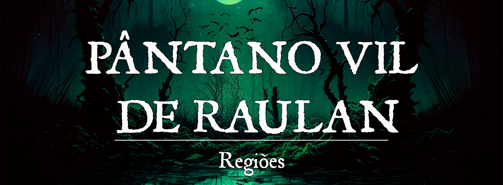

O Pântano Vil de Raulan
Descrição
O Pântano Vil de Raulan é uma enorme região pantanosa localizada a leste de Gronnemar, que alguns acreditam estar em constante expansão. Sua formação foi consequência dos atos de vingança de um antigo imperador do Império de Elselenor. O Pântano Vil de Raulan é uma ameaça para todas as cidades-estados que fazem fronteira com a região.
É um lugar sombrio e sinistro, coberto por árvores retorcidas e musgos venenosos. O ar é denso e úmido, e é frequentemente envolto em névoa espessa. As criaturas que vivem lá são geralmente selvagens e perigosas, a maioria monstros. As tribos que existem lá são hostis a qualquer forasteiro e utilizam do próprio pântano para emboscar e caçar. Atravessar o pântano é uma tarefa arriscada e que requer muito preparo, no entanto, às vezes é a única opção para fugitivos ou aventureiros.
Fernando_Eldritch_Swamp_Foggy_Omnious_96ba5fe0-6aad-4e10-a0b9-3689735b9555.png |O Pântano Vil de Raulan
{kind=link}
Geografia:
O solo é lamacento e difícil de atravessar, e as águas são turvas e cheias de criaturas venenosas. A magia que criou o pântano também mantém um poderoso feitiço de proteção, tornando-o quase impossível de ser destruído. É muito fácil se perder no pântano, visto que uma névoa espessa o envolve regularmente.
Governo:
Embora existam alguns vilarejos dentro do pântano, a maioria é pertencente a tribos selvagens e hostis a forasteiros. Quanto mais próximo das Ruínas de Raulan, mais violentos se tornam os povos selvagens. Em alguns casos, a magia do pântano corrompe a natureza, o corpo e a mente dos habitantes, transformando-os em aberrações com semelhança às suas antigas formas.
As lendas dizem que o Pântano Vil de Raulan é “protegido” por uma entidade estranha e poderosa, um ser jamais visto que emana pura loucura. As tribos do pântano chamam-no de Zarathar Vol’tara, que supostamente é traduzido de uma língua estranha e de origem desconhecida como “Antigo Senhor”. Os gronnemari o conhecem como o Rei sob as Estrelas, uma maldição antiga nascida da loucura de Theodore, um antigo imperador élfico.
Caráter:
As criaturas que habitam o pântano são desconfiadas e hostis a forasteiros, principalmente os monstros. Algumas tribos são insanas e perigosas até mesmo para seus irmãos. Os monstros inteligentes que habitam o pântano o conhecem bem e utilizam de sua influência para atacar viajantes. Entre os monstros mais perigosos, há as bruxas.
População:
As tribos que vivem no Pântano Vil de Raulan normalmente são povos lagartos, bullywugs e yuan-tis. Monstros inteligentes também costumam viver no pântano, escondidos em suas profundezas. Alguns relatos apontam um dragão negro louco que vive no pântano.
Conflito:
Ninguém sabe qual é o objetivo do Rei sob as Estrelas e, na verdade, sequer se ele realmente existe. Contudo, isso não nega que o pântano é definitivamente afetado por alguma influência estranha e poderosa, e nem mesmo os estudiosos conseguem decifrar sua totalidade.
Fernando_Cosmic_Entity_of_a_Yellow_cape_with_tentacles_undernea_5b3aca3f-c99c-4017-9ffe-d647c6a77693 (1).png |O Rei sob as Estrelas
{kind=link}
O Rei sob as Estrelas: Essa entidade do Pântano é tão misteriosa quanto seu nome. Ele supostamente surgiu da catástrofe de Raulan, quando Ehremyth invocou a magia que tornou a região o Pântano que é hoje e ceifou a alma de tanto ehremyths quanto o povo de Raulan. Sua aparência visual é uma incógnita e o povo na realidade nem sabe se ele realmente existe.
Fernando_Great_Beast_Cosmic_Horror_Fantasy_Art_2d183023-b3a0-4511-b36d-9c366fcc7164.png |A Besta de Raulan
{kind=link}
A Besta: É a maior e mais perigosa criatura do Pântano. Colossal em tamanho, A Besta é anormalmente silenciosa, esguia que pode aparecer ou sumir em um piscar de olhos. Ela possui um urro agudo que é audível há centenas de metros. Estar na presença da Besta ou ouvir seu urro pode causar mutações abomináveis no corpo das pessoas que, se não se distanciarem com rapidez, sucumbirão ao Pântano, se tornando mais um de seus residentes abomináveis.
NPCs Presentes
História de Origem
Era das Trevas
O Pântano nem sempre foi o brejo amaldiçoado que é nos dias de hoje. Outrora, Raulan era uma cidade élfica, dedicada à deusa Arachne, que fazia parte do império Élfico de Gronnemar, chamado Faearall. Os elfos, agraciados pelo primordial amor de Arachne, viviam suas vidas de maneira mais simples, voltada à comunidade e o amor à Natureza. As colinas foram repletas de grandes árvores, cujas copas traziam a sombra e a brisa fresca para seus moradores. Arachne era adorada pelos seus agraciados e assim continuou após a sua traição e morte de Leshay.
Por volta do ano de 25.000, o Império era regido por Theodore, cuja reputação era extremamente negativa. Theodre governou Faearall por mil anos, com decisões cruéis e violentas. Muitos tramaram contra a vida do Imperador, mas ninguém foi capaz de matá-lo. Os artefatos concedidos a Indorion (o imperador antecessor a Theodre) tornaram-no invencível. Foi apenas quando a deusa Leshay foi morta por sua irmã, que Theodre foi enfraquecido. Contudo, sua fraqueza não pôde ser aproveitada, pois todos os elfos também foram enfraquecidos pelo luto.
Lentamente o Império de Elselenor começou a desmoronar. Os descendentes daqueles que foram expulsos de Faearall por Theodre invadiam as terras élficas em busca de riquezas, enfraquecendo ainda mais o Império. Ao se recuperar do luto, Theodre foi consumido pelo ódio, fazendo florescer o desejo de vingança. Theodre ordenou uma marcha contra Raulan, uma das principais cidades dedicadas a Arachne.
O plano de Theodre não era apenas matar os elfos de Raulan (que naquela altura já eram elfos sombrios), mas expurgá-los da história. O Imperador Theodre desenvolveu uma nova magia, algo extremamente poderoso criado a partir da loucura de sua mente. Raulan foi um dos palcos de uma das maiores catástrofes da história: o descontrole da magia. Theodre utilizou uma magia de poder inimaginável para destruir completamente Raulan. Esse ato, estranhamento, ocorreu no exato momento de uma outra catástrofe ao sul de Pheros. A consequência de tamanha destruição foi o descontrole total da magia, consumindo a alma de todo o conjurador em qualquer parte do mundo ao utilizar o mais simples feitiço.
O Imperador Theodre, ao lado de Raulan e de todos que marcharam com ele, foram mortos nesse dia. Os artefatos carregados por Theodre, que foram abençoados pelos deuses élficos há muito, se perderam em meio a destruição. A partir daquele ponto, um pântano sombrio se espalhou por quilômetros. Da junção das almas arrancadas, uma criatura, nascida da própria loucura e escuridão daquele ritual nasceu no âmago de Raulan. Uma criatura tão indescritível, que aqueles que a vêem, têm suas mentes devastadas pela insanidade. Os relatos nunca são iguais, mas são sempre aterradores. Poucos sobrevivem ao vislumbre desse ser. Mas os que sobrevivem, apenas o chamam de um título: O Rei sob as Estrelas.
Primeira Era
Com o passar de muitos anos, o Pântano Vil de Raulan começou a se expandir lentamente, tornando-se posteriormente uma ameaça para as regiões vizinhas conforme devorava vilas e outros pequenos assentamentos. Os monstros do pântano tornaram-se mais hostis e corajosos, explorando regiões além de seus domínios. As cidades de Gronnemar se viram forçadas a agir contra a influência do pântano, buscando segredos mágicos antigos e feitiços poderosos para isso. Eventualmente, através de muito esforço, a influência do pântano parou de crescer, mas não sem antes ter engolido regiões importantes para Gronnemar.
Atualmente, muitas expedições buscam os restos de civilizações antigas e tesouros perdidos no Pântano Vil de Raulan, no entanto, encontrar algo além de sua própria morte é uma tarefa árdua nesta região. É verdade que o Pântano Vil guarda tesouros antigos e poderosos, muitas vezes protegidos por assombrações, maldições ou guardiões, e isso o torna um alvo incrível para aventureiros experientes.
O túmulo do primeiro Imperador de Faearall, Indorion, foi consumido pelo pântano há muito, perdido em suas profundezas. Ninguém jamais foi capaz de encontrar o túmulo de Indorion desde a queda do Império de Elselenor, contudo, os elfos acreditam que ele permanece protegido. Um antigo clã élfico, os Lacendulo, foram os guardiões do túmulo de Indorion, e prometeram que nem mesmo a morte os impediria de cumprir seu dever.
Segunda Era (Atual Era)
O Pântano Vil de Raulan ainda é preocupante para as cidades-estados vizinhas próximas, com monstros e tribos selvagens constantemente atacando vilas e outros assentamentos. A expansão do pântano, por outro lado, é vista como uma lenda para a maioria das pessoas comuns. A verdade é mais complexa, no entanto. O Pântano Vil de Raulan continua expandindo sua influência, mas de maneira extremamente lenta e demorada.